前言
All in c++了，那么c++基础重中之重，尤其在我想服务端+游戏双线程的基础上，好，那么好，学习侯捷大师的准没错。
本系列笔记记录侯捷《C++面向对象高级开发》上知识点。
一、头文件与类的声明
1.1 c和c++
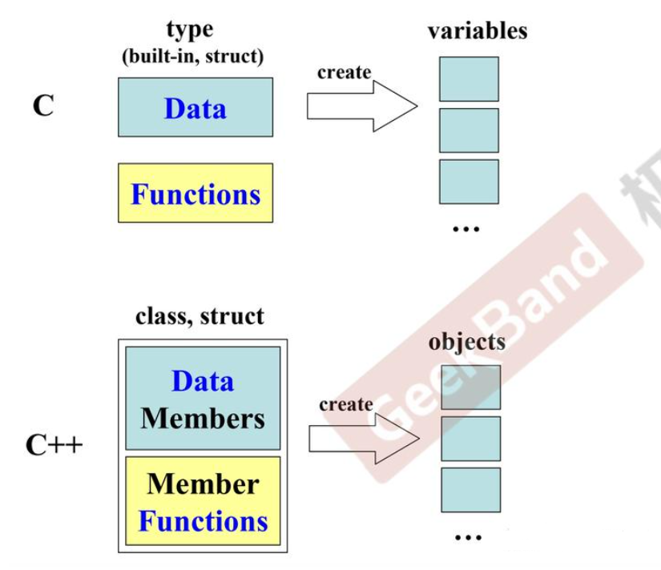
c语言中，data和函数都是分别定义，根据类型创建的。这样创建出的变量，是全局的。
cpp中，将数据data和函数都包含在一起（class），创建出一个对象，即为面向对象。数据和函数（类的方法）都是局部的，不是全局的。
class的两个经典分类：有指针成员的类（complex）、无指针成员的类（string）。
1.2 头文件与类
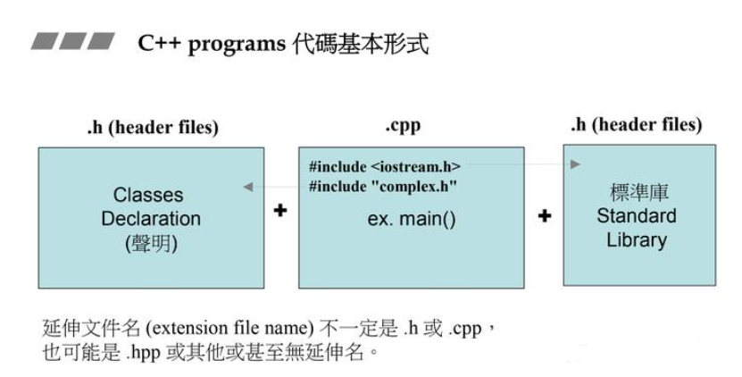
- 引用自己写的头文件，用双引号。
头文件的标准写法：
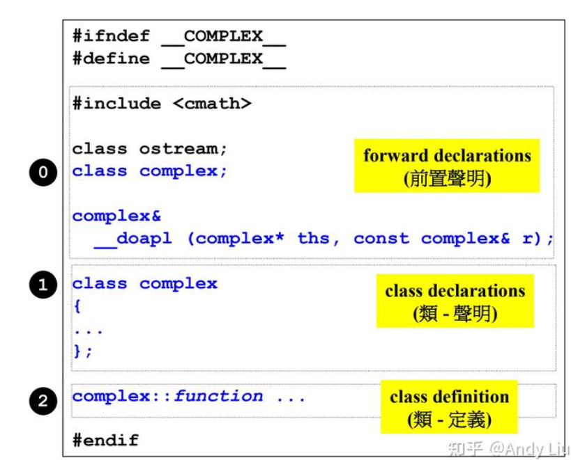
首先是防卫式声明，如果没定义这个名词，那么就定义一下。ifndef+define。（这样如果程序是第一次引用它，则定义，后续则不需要重复定义，不需要重复进入下面的过程）
1是要写的类的声明，2是要写类的具体定义，写12的时候发现有一些东西需要提前声明，写在0处。
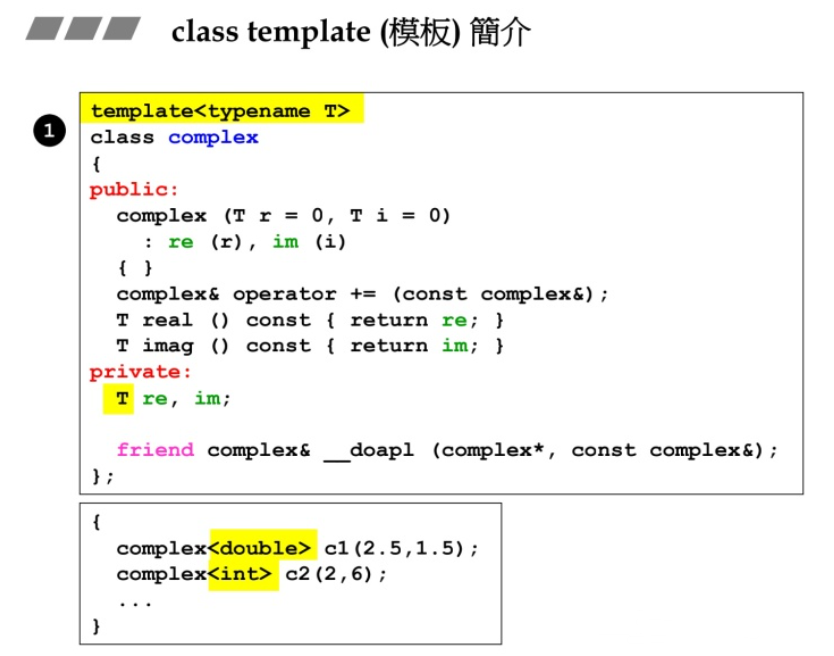
- 模板类型，这里用符号T表示。
- 这里的意思是，因为实部和虚部的类型不确定，可能是double、float、int，定义起来比较费劲。我自己定义一个模板类型叫做T来满足这个要求。
- 将T作为一个类型参数来传入，在调用的时候就可以指定类型了。
- 通过在定义类的前面加入一行代码
template<typename T>来实现。
二、构造函数
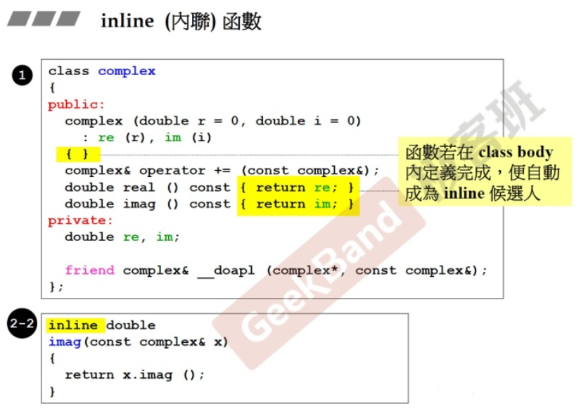
定义类的时候，可以直接在body中定义函数（inline函数，在body中定义完成），也可以只是在body中声明函数。
inline内联函数。如果定义的函数是内联函数，那么会比较好，运行比较快，尽可能定义为内联函数。
在body外，通过inline关键字来指定该函数为inline函数。
注意的是，上面所有的inline函数，都只是我们指定的，希望它为inline，具体是不是，要看编译器来决定。
数据应该被定为private，这样外界看不到。函数应该定义为public，被外界使用。
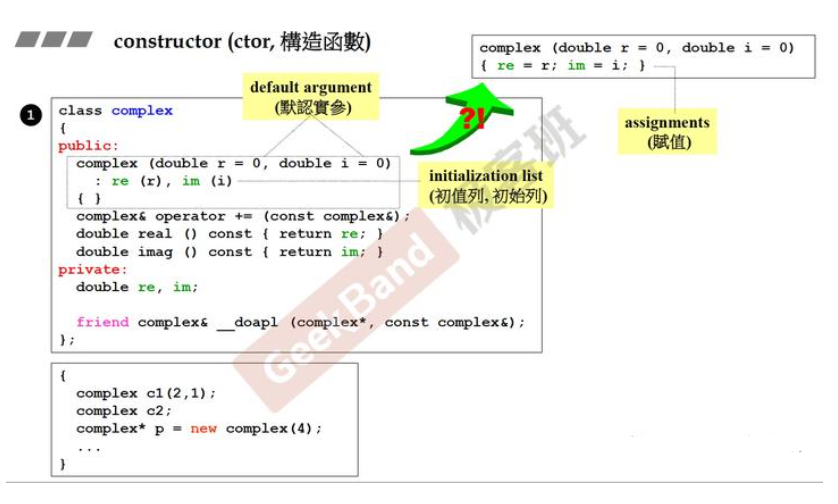
- 通过构造函数来创建对象。会自动调用构造函数进行创建。
- 构造函数名称需要与类的名称一样。函数的参数可以有默认参数。构造函数没有返回类型。
- 注意，不要使用赋值的方法来写构造函数，使用构造函数的特殊的方法来写，更规范。使用初值列、初始值。
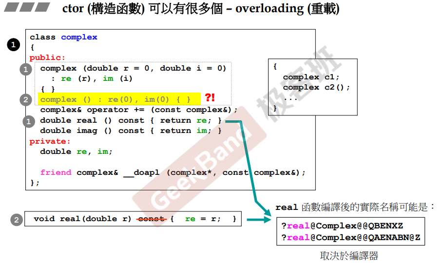
构造函数可以有很多个，可以重载。但是上面的12两个构造函数冲突了，右面的调用方式对两个构造函数都适用，冲突。
同名的函数可以有多个，编译器会编成不同的名称，实际调用哪个会根据哪个适用。
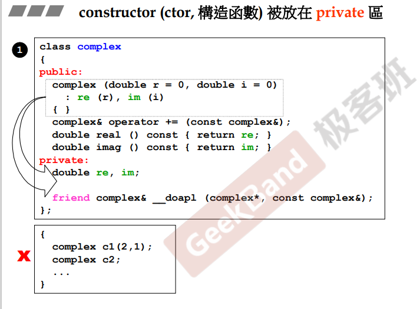
- 通常构造函数不要放在private中，这样外界没法调用，也就无法创建对象。
- 但是，在设计模式Singleton（单体）中，将构造函数放在了private中。这个class只有一份，外界想要调用的时候，只能使用定义的getinstance函数来取得这一份；外界无法创建新的对象。
三、参数传递与返回值
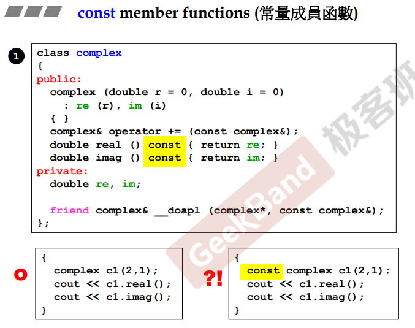
- 定义函数的时候，函数名后面➕const，对于不会改变数据内容的函数，一定要加上const。
- 对于上面右侧调用方式，我们创建一个常量复数然后输出实部虚部，如果上面real和img函数定义的时候，没有加const，那么这里函数默认的意思是可能会改变数据，与我们的常量复数就矛盾了。编译器会报错。因此，对于不会改变数据内容的函数，一定一定要加const。
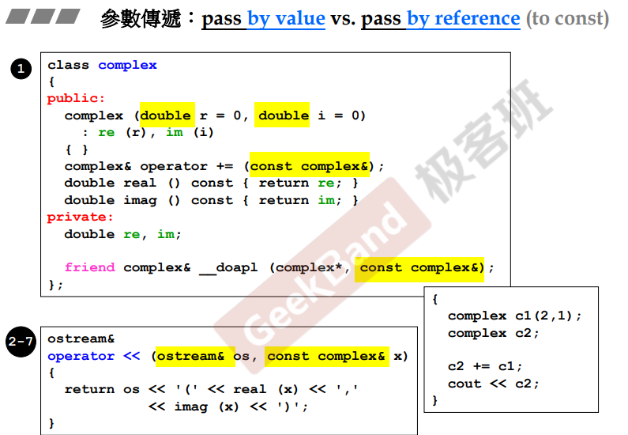
- 参数传递，传递value是把整个参数全传过去，double4字节。尽量不要直接value传递。
- 尽可能传递引用reference，传引用相当于传指针，很快，形式又很漂亮。
- 传引用过去，修改之后，都会改变；如果只是为了提升速度，不向改变数据，那么传const引用。这样传进去的东西，不能被修改。
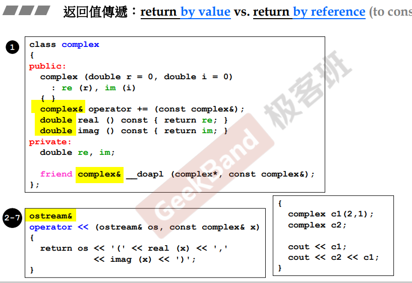
- 返回值的传递，也尽量返回引用。
- 1中操作符重载的声明中，没有写变量名，也可以写上。c++中，声明函数的时候，可以不写变量名，实现的时候必须写。
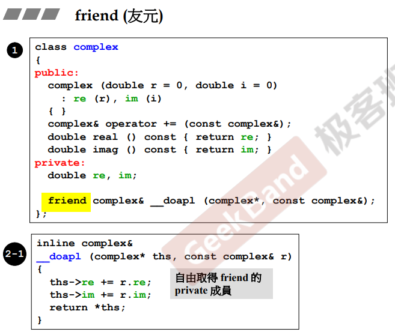
- 友元：friend，修饰在函数定义之前，表示这个函数可以直接拿该类对象的private数据。
- 如上面所示，声明为friend之后，函数可以直接取到re和im，如果不被声明为friend，只能通过调用real和imag函数来得到，效率较低。
四、操作符重载
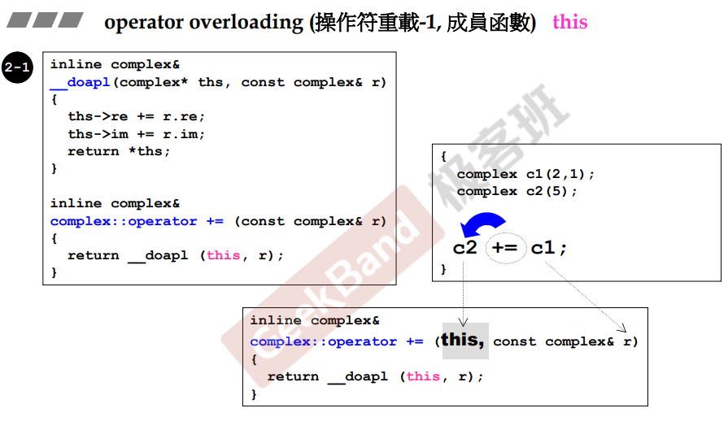
- 第一种方式，写成成员函数。所有的成员函数都带有一个隐藏的参数this（是一个指针），this表示（指向）调用这个函数的调用者。
- 定义函数的时候，在参数列中不能写出来this，直接用即可。
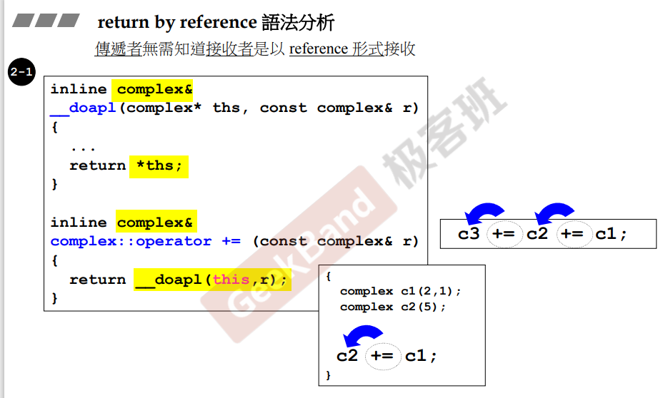
- 传递者无需知道接受者是以引用形式接受。
- 这里面虽然返回值需要的是引用，但是代码中写的返回值可以是value。
- +=操作符中，定义的参数是引用，但是传进去的c1也可以是value。
- 接收端使用什么形式接收与传递者无关。
- 上面的操作符，进行操作之后，c2改变了，返回了c2的引用。因此感觉上，将操作符写为void函数也可以，但实际上，为了可以兼容c3+=c2+=c1的形式，写成返回引用更好。
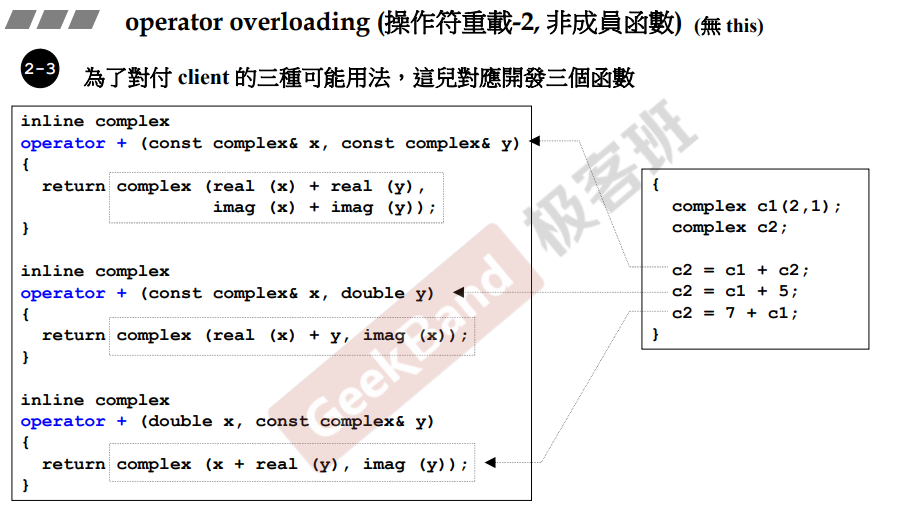
- 非成员函数的操作符重载。（没有this）
- 应对客户的三种方法，写出三种方式，使用时进行重载。
- 非成员函数是global函数。
- 这些函数不能返回引用，必须是一个local object。因为这里面的操作符中二者不是一个加到另一个上，是两个对象相加，因此返回必须是一个对象，不是引用。
- typename()，创建一个typename类型的临时对象。
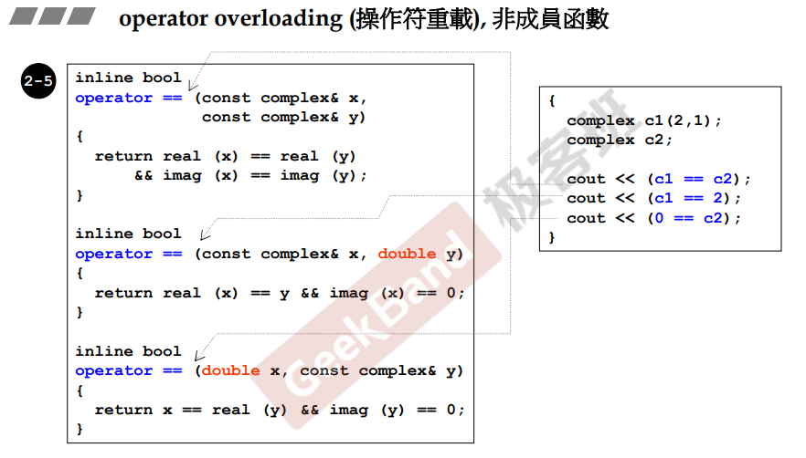
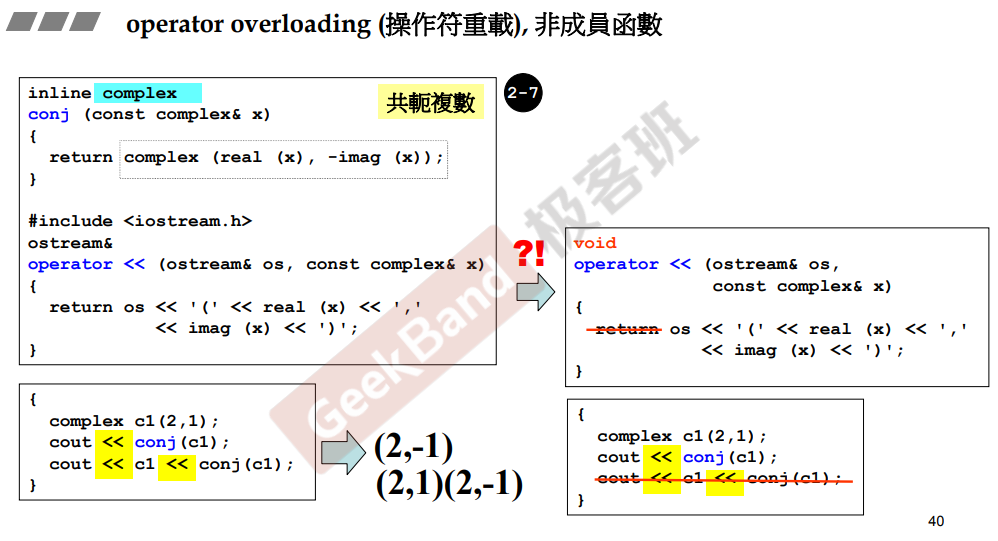
- cout不认识新定义的这种复数，因此也需要对<<进行操作符重载。
五、三大函数：拷贝构造、拷贝赋值、析构函数
下面我们学习另一种类，带指针的类，string.h的实现。
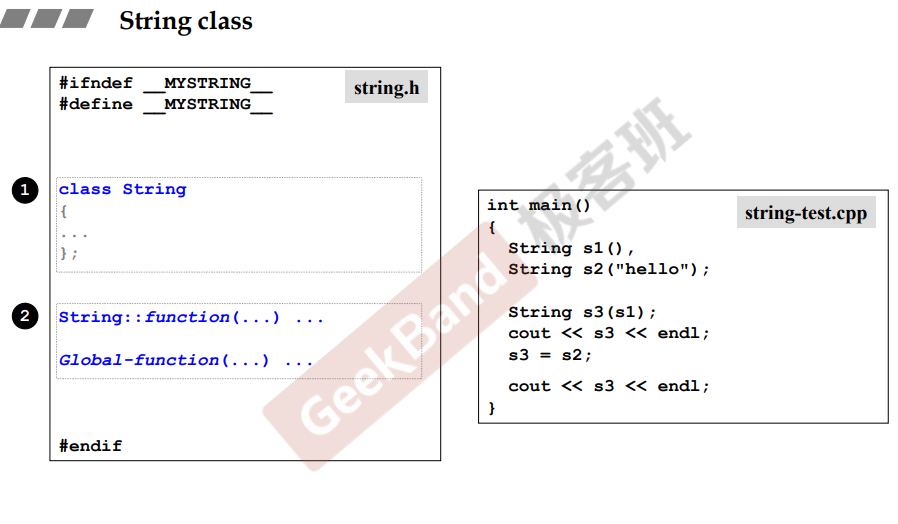
- 同样进行防卫式的声明。
- string s3(s1)就是拷贝构造，s3=s2是拷贝赋值。
- 不写的话，会使用编译器默认的拷贝构造赋值（一个bit一个bit的复制）。针对带有指针的，编译器默认的只是拷贝了指针，而不是指针指向的数据。因此，如果类中有指针，需要写这两个函数。
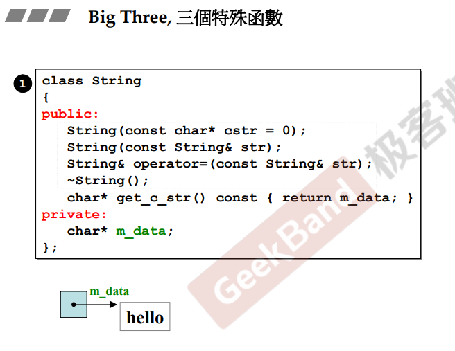
- 因为字符串的长度未知，不能直接设定一个xx长度的数组，这样会导致内存浪费。
- 因此数据应该是一个指向字符的指针，给出字符串之后，可以动态的调整占用内存。
- 第二行是拷贝构造函数（因此参数就是string类）。
- ~String是析构函数。这个类对象死亡的时候，会自动调用。
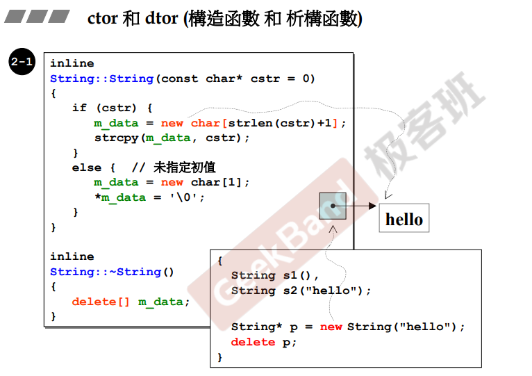
- 字符串是一个指针，最后有结束符号\0。
- 如果传入的是0，说明是空字符串，则只有一个结束符号。
- 析构函数，释放指针指向的内存。
- 默认的是浅拷贝。
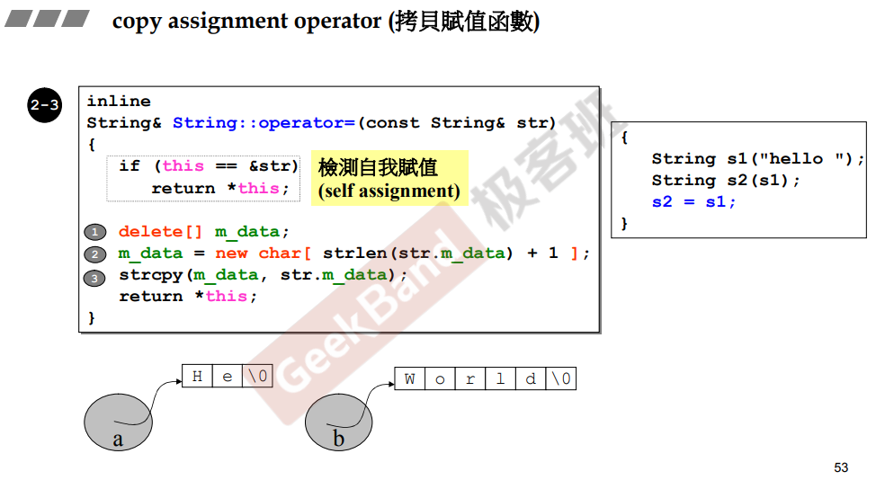
- 拷贝赋值，两边目前都有东西。
- 先检测是不是自我赋值，需要判断一下。
- 然后先把数据清空，然后新建指定大小的数组。然后把字符串内容复制过来。
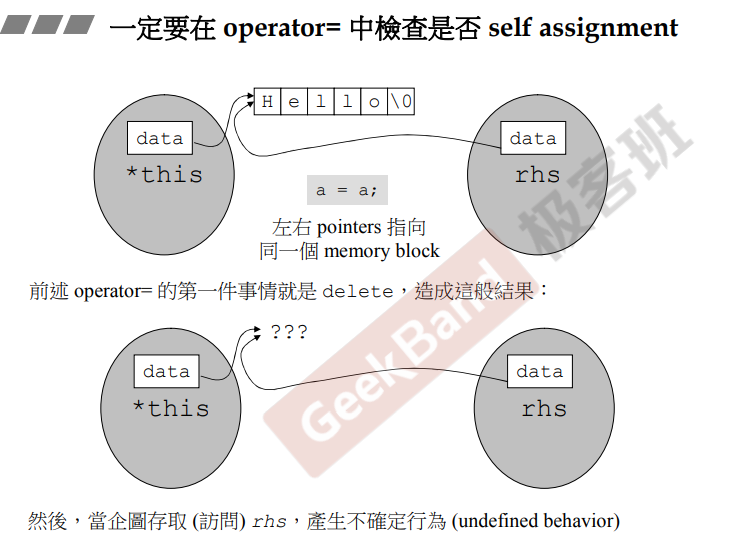
六、堆、栈和内存管理
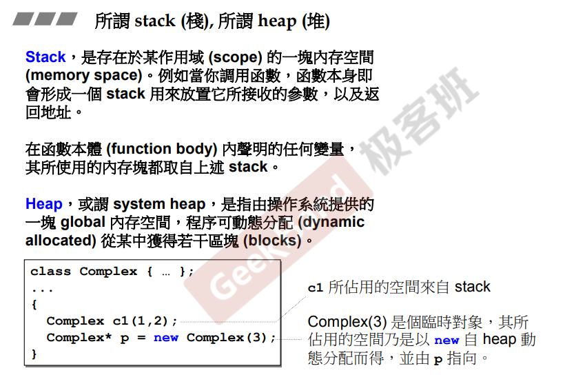
- 栈是存在于某作用域的一块内存空间。
- 堆是由操作系统提供的一块全局内存空间，用new来动态取得。在栈中的，作用域结束，则释放了；在堆中的，需要手动释放。
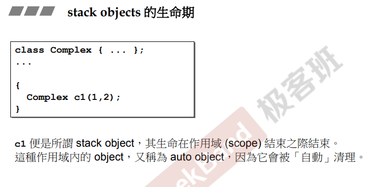
- 结束之后，会自动调用析构函数。
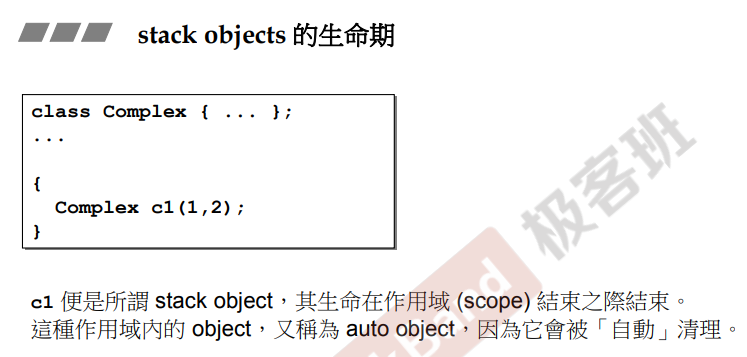
- 加上static之后，会存在到整个程序结束。程序结束之后才会调用析构函数。
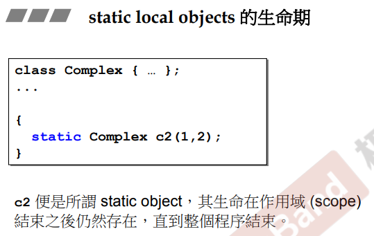
- 加上static之后，会存在到整个程序结束。程序结束之后才会调用析构函数。
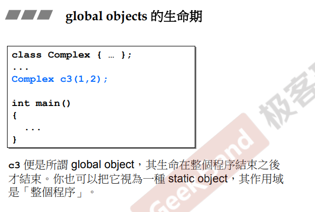
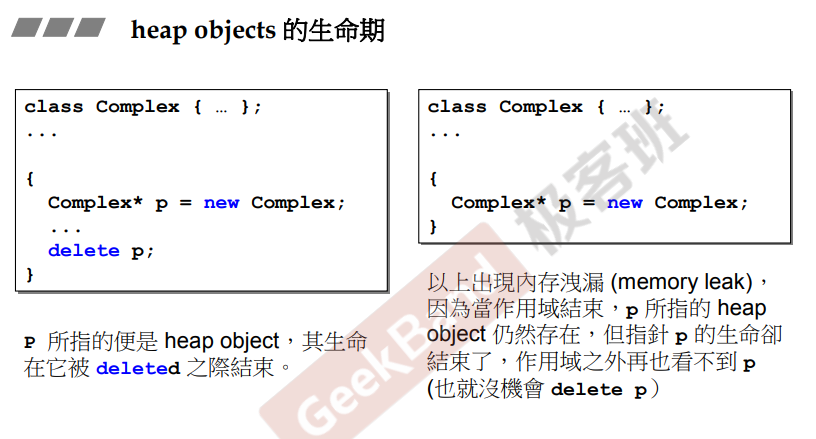
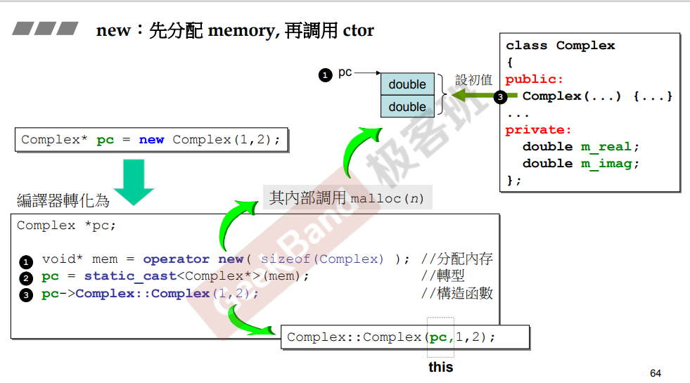
- 先分配了内存，将指针转型，通过指针调用构造函数。
- 内部使用malloc分配内存。
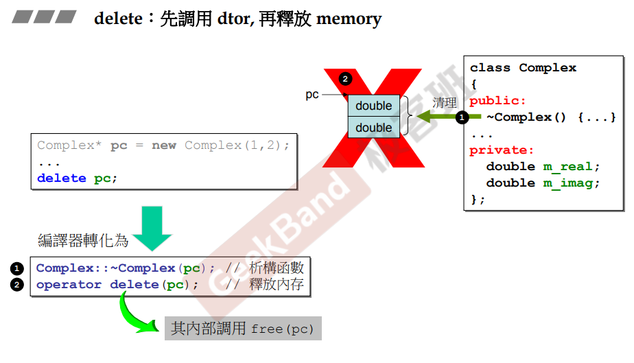
- 先调用析构函数，再释放内存。
- 内部使用free来释放。
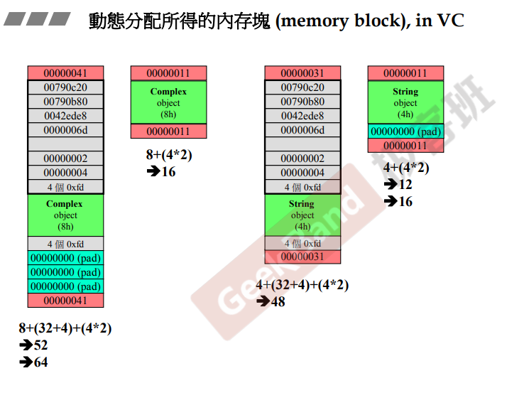
- Vc调试模式下，前后都带着灰色的内存部分（上面32，下面4），还有头尾的cookie（每个cookie4字节）。分配的内存都是16的倍数，因此填充到64字节。
- 执行模式下，没有灰色的，则占用16字节。
- cookie表示使用了多少字节，每一位是4位bit，因为内存必须是16的倍数，因此最后四位bit一定都是0，借用最后的一位1表示占用内存，0表示释放内存。
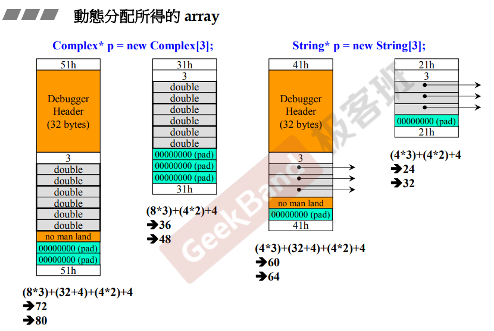
- 左边的，最后加的4字节，保存数组的长度。
- 右边的同理。
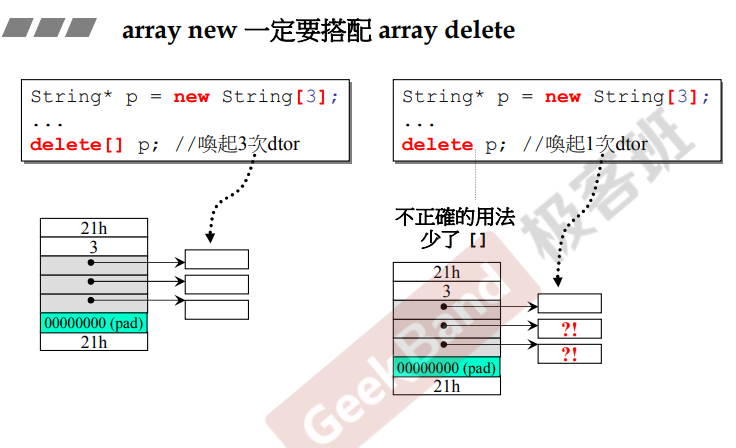
- array new一定要搭配array delete，否则会内存泄漏。因为普通的delete只调用一次析构函数。内存泄漏会发生在剩下两个，因为剩下两个没有调用析构函数。
- 这种情况主要发生在有指针的类，因为如果没有指针的类（比如之前的复数），没有动态分配内存new，因此也就不需要调用自己写的析构函数来杀掉。
七、类，模板
7.1 static
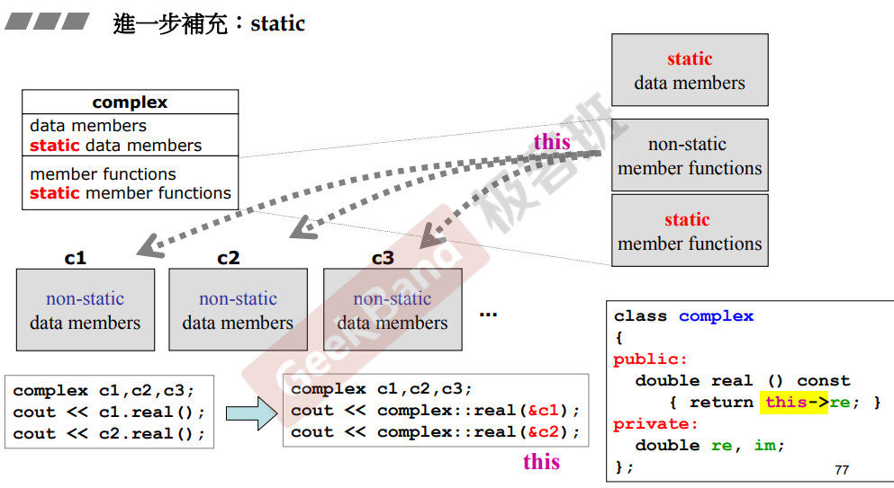
在数据或函数前加static关键字，则变为静态函数/数据。
一个成员函数要处理很多个数据，需要靠某个东西告诉他处理谁，就是this pointer。来告诉他处理从c1、c2、c3。成员函数有一个隐藏的this pointer参数。
加上static之后，这个数据/函数就不属于这个对象了，跟这个对象脱离。
静态函数没有this pointer参数，因此不能直接处理普通的对象，只能处理静态数据。**
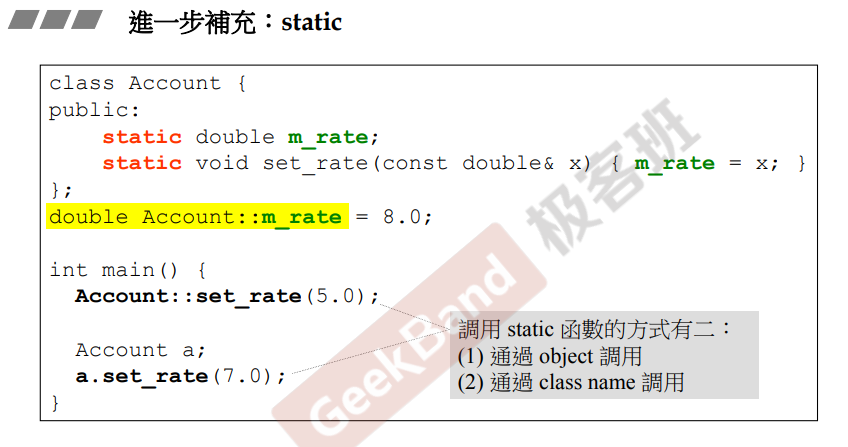
- 这个例子中，利率mrate是静态数据，set_rate是静态函数。
- 静态函数set_rate只能处理静态数据。
- 静态函数可以通过对象object来调用，也可以通过class name来调用。
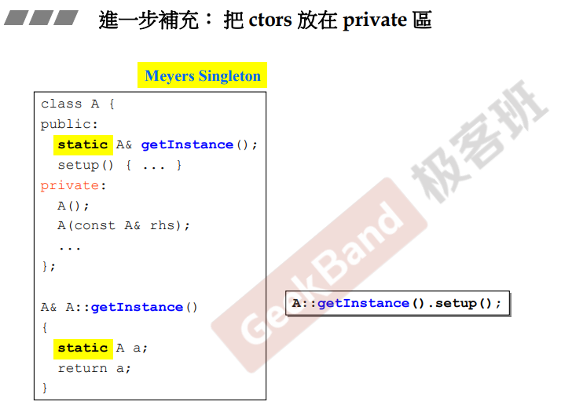
- 构造函数放在private中，不想让外界创建。
- 设计一个静态函数，来返回唯一的那一份，这个静态函数是外界取得这一份的唯一方法。
- 调用这个静态函数之后，才开始创建这唯一的一份。
7.2 cout
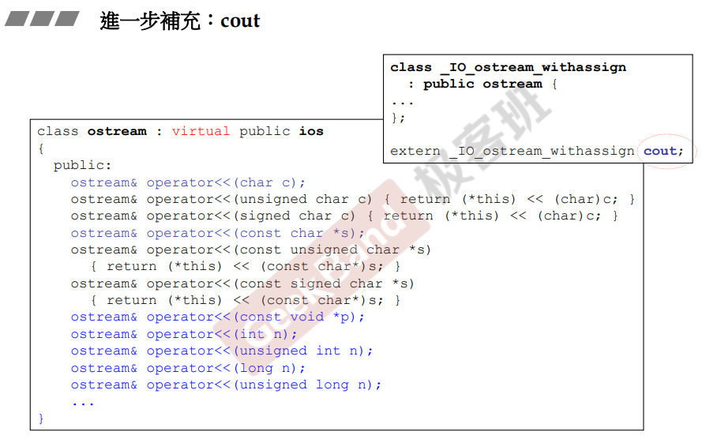
- cout是一种ostream。
- 设计了很多种<<的操作符重载。
7.3 模板
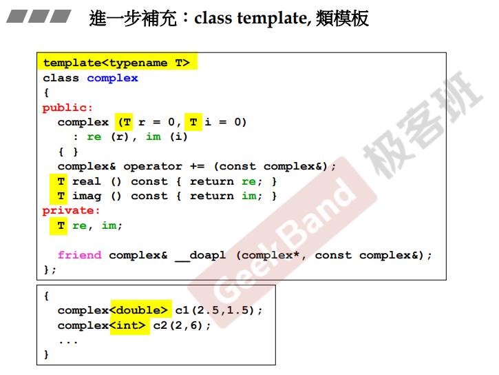
- 使用T来代替某种类型，类模板。
- 使用的时候，<>中写明类型，编译器就会把T全部替换为这种类型。
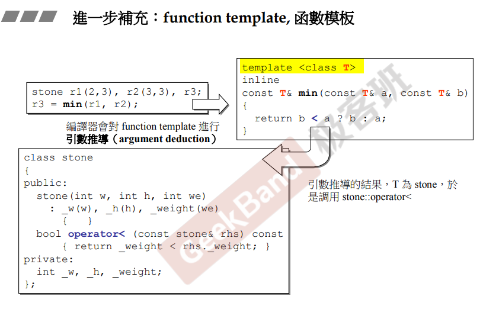
- 函数模板。
- 这里面的min，比较的类型用T来表示。
- 这样比较的时候，<符号就会使用T类型中重载的<符号来进行。
- 用的时候不需要用<>绑定类型，编译器会根据传进去的对象类型自动绑定T类型。
7.4 namespace
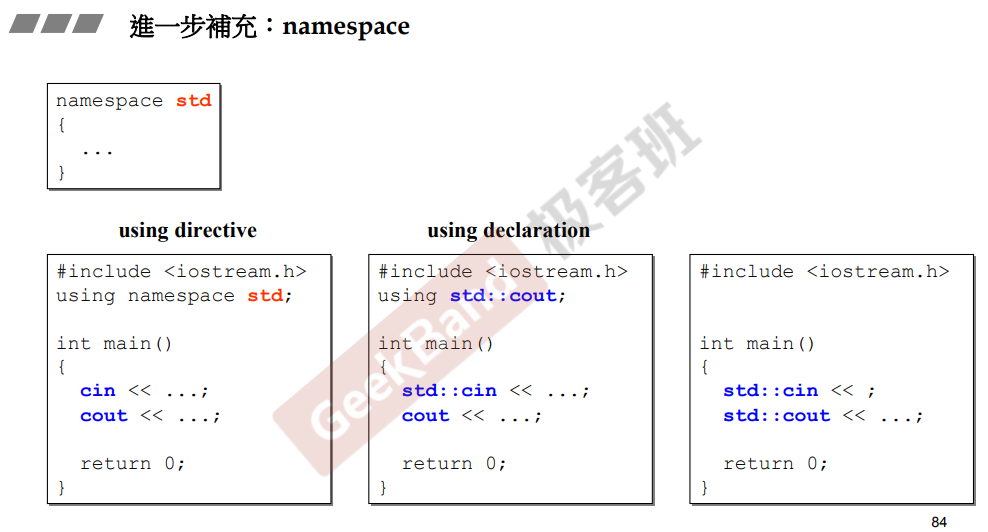
一目了然
八、组合与继承
8.1 组合
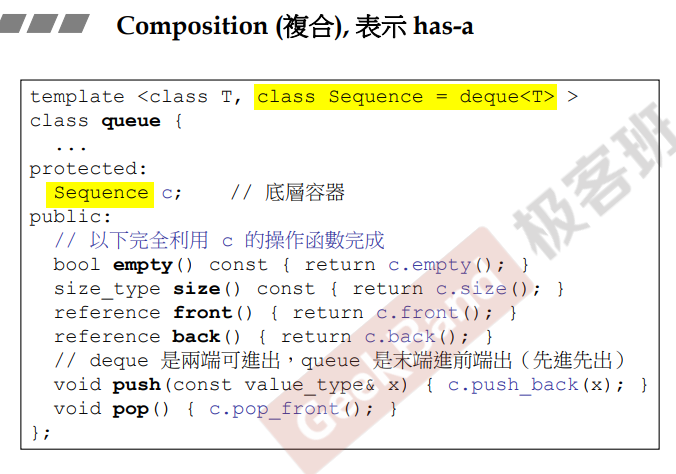
- 表示这个class queue中，有一个这种sequence类东西。
- 这个sequence是deque
- queue里面所有的功能，都是调用c的功能来完成的。
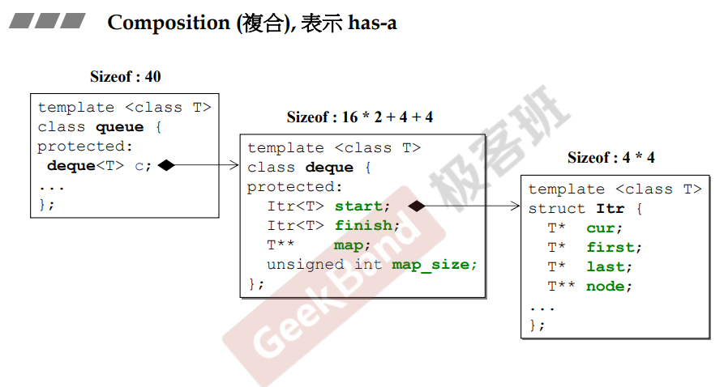
- queue中有deque，deque的源代码中，还有另一个复合，Itr
。 - 从内存的角度看，queue占用40字节。
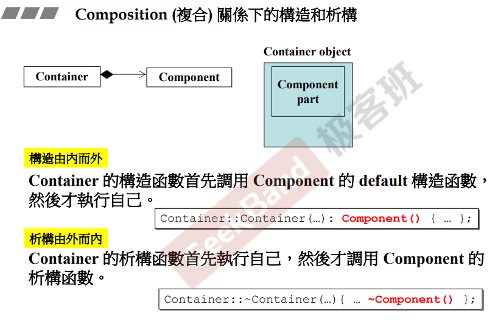
- 左边拥有右边。
- 复合情况下的构造函数，由内而外，析构函数，由外而内。代码中红色的部分，是编译器来完成的。编译器会调用内部的默认的构造函数或析构函数。如果不希望调用默认的，那么就需要自己写代码。
8.2 委托
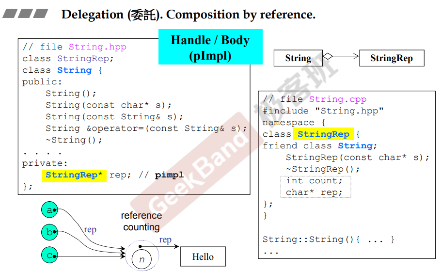
- 引用方式的复合，即左边has a右边类的指针。
- 即可以通过该指针，把任务委托给右边的类。
- 复合中，内部和外部是一起出现的，即调用二者的构造函数；而委托的话，因为是指针，是不同步的，当需要右边的时候，才创建这个。
- 应用实例：右面的类为具体的实现，左边只是调用的接口。
8.3继承
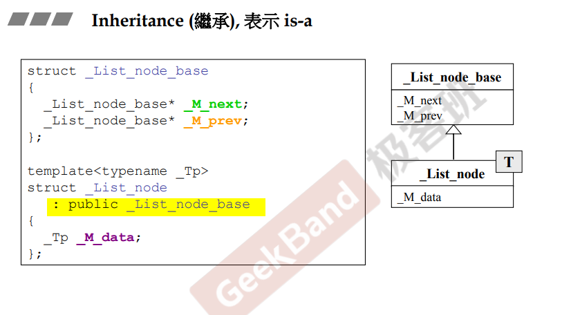
- 黄的的一行为使用public继承的语法，表示继承_List_node_base类。
- 继承，表示is-a，是一种。
- 父类的数据会被完整继承下来。
- 子类拥有自己的以及父类的数据。
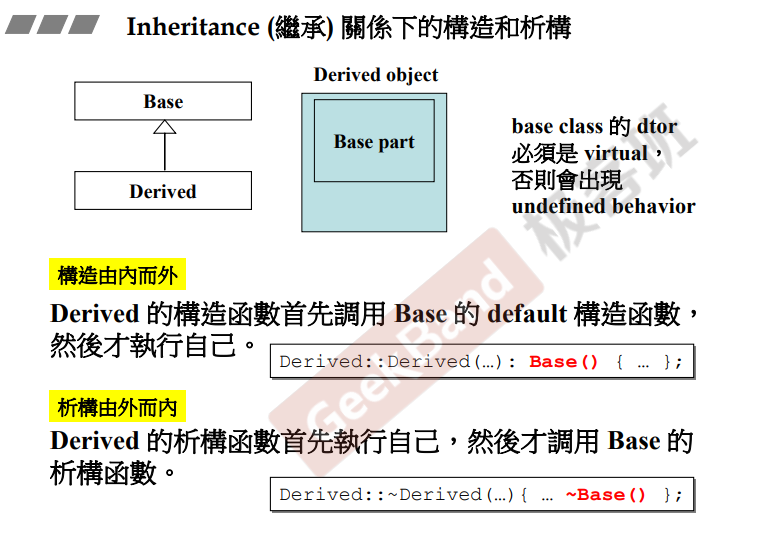
- 子类的对象中有父类的成分。
- 构造时，先调用父类的构造函数，然后再调用自己的。
- 析构时，先析构自己，然后析构父类的。
- 编译器会自动完成。
九、虚函数与多态
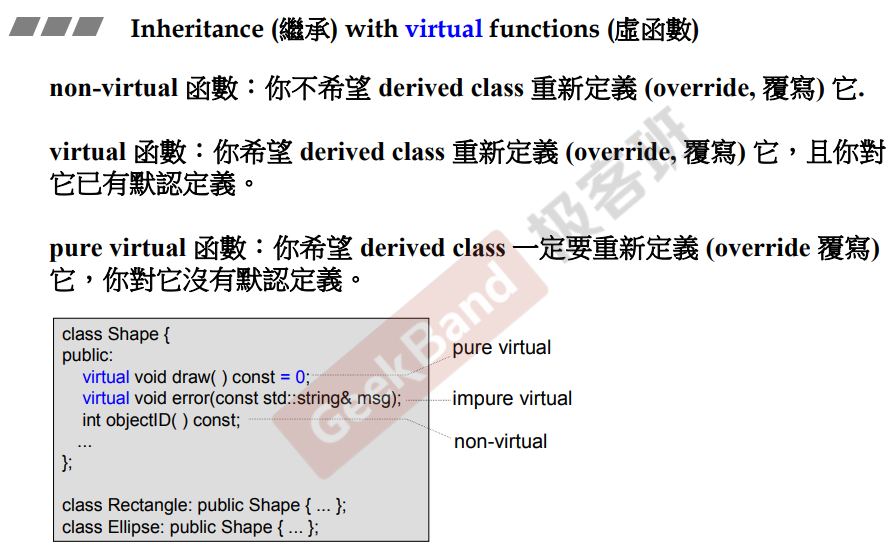
- 搭配虚函数来完成继承。
- 在任何成员函数之前加上virtual关键字，即为虚函数。
- 子类可以调用父类的函数，即继承了函数（实际上是继承了函数的调用权）。
- 非虚函数，是不希望子类重新定义（override）的函数。**
- 虚函数，希望子类重新定义它，且已有默认定义。
- 纯虚函数，希望子类重新定义它，且目前没有默认定义，一定要去定义。即函数定义后面直接=0。
- 上图中，定义了一个父类shape，其中定义了几种成员函数。objectID是非虚函数，不需要重新定义。error是虚函数，有默认定义，可以重新定义。draw函数是纯虚函数，没有默认定义，必须要子类来重新定义。
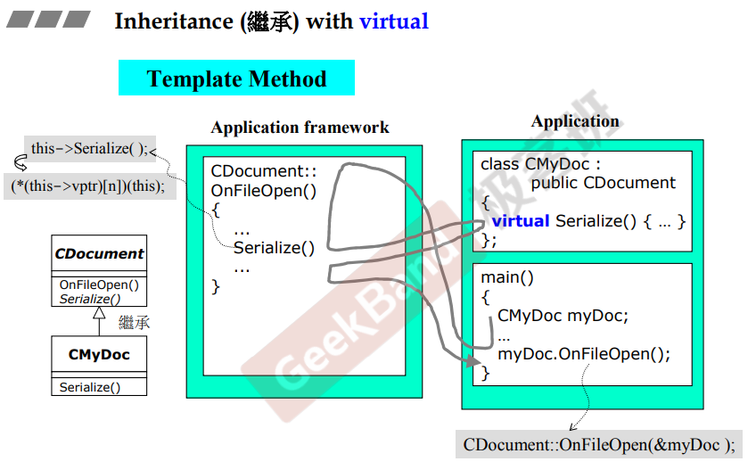
- 父类中其他可以通用，读文件这个函数Serialize设置为虚函数，需要override。
- 我们定义一个读文档的类，那么serialize函数就要override成读文档的函数。
- 调用serialize时，通过隐藏的this pointer来调用，因为myDoc.OnFileOpen，因此this就是myDoc，因此调用的是我们override之后的serialize函数。
- 这就是设计模式，template method
还讲了观察者模式，但是我这种设计模式大佬还用听？轻轻松松，不看了